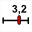

Los atajos de teclado no funcionan con la versión en línea de MathGraph32.
F1 |
Lanza la ayuda de MathGraph32. |
F2 |
Acelera la herramienta precedente |
F3 |
Inicia el cuadro de diálogo para ver y editar objetos numéricos |
F4 |
Activa la herramienta para nombrar un punto o una recta |
F5 |
Activa la herramienta para mover el nombre de un punto o una recta |
F6 |
Activa la herramienta goma para ocultar un objeto |
F7 |
Activa la herramienta cortina para desenmascarar un objeto oculto |
F8 |
Activa la herramienta de ejecución de una macro |
F9 |
Inicia la herramienta que muestra el protocolo de la figura |
F10 |
Muestra nuevamente la última indicación de la herramienta en curso (arriba a la derecha). |
Ctrl + Suppr |
Activa la herramienta de supresión de un objeto gráfico |
Ctrl + Ins |
Creación de un punto definido por sus coordenadas en un referencial |
Ctrl + A |
Creación de un segmento |
Ctrl + B |
Circunferencia por centro y punto |
Ctrl + Shift + B |
Circunferencia por centro y radio |
Ctrl + C |
Copia la figura en el portapapeles. |
Ctrl + D |
Creación de una recta por dos puntos |
Ctrl + E |
Creación de un cálculo |
Ctrl + Shift + E |
Creación de un cálculo complejo. |
Ctrl + F |
Creación de una función numérica de una variable real |
Ctrl + Shift + F |
Creación de una función numérica compleja de una variable compleja |
Ctrl + J |
Creación de un cursor  . |
Ctrl + K |
Creación de un polígono |
Ctrl + Shift + K |
Creación de una superficie delimitada por un polígono o una circunferencia |
Ctrl + L |
Medida de longitud |
Ctrl + Shift + L |
Medida de ángulo no orientado |
Ctrl + M |
Creación de una marca de segmento |
Ctrl + Shift + M |
Creación de una marca de ángulo no orientado |
Ctrl + N |
Creación de una nueva figura |
Ctrl + O |
Apertura de un archivo que contiene una figura mgj |
Ctrl + P |
Creación de un punto libre |
Ctrl + Shift + P |
Creación de un punto ligado |
Ctrl + S |
Guardar la figura en curso |
Ctrl + T |
Creación de una visualización de texto libre |
Ctrl + Shift + T |
Creación de una visualización de texto ligado a un punto |
Ctrl + U |
Creación de una visualización de valor libre |
Ctrl + Shift + U |
Creación de una visualización de valor ligado a un punto |
Ctrl + V |
Creación de una visualización LaTeX libre |
Ctrl + Shift + V |
Creación de una visualización LaTeX ligada a un punto |
Ctrl + Z |
Anulación de la última acción sobre la figura |
Ctrl + Y |
Anulación de la última anulación. |